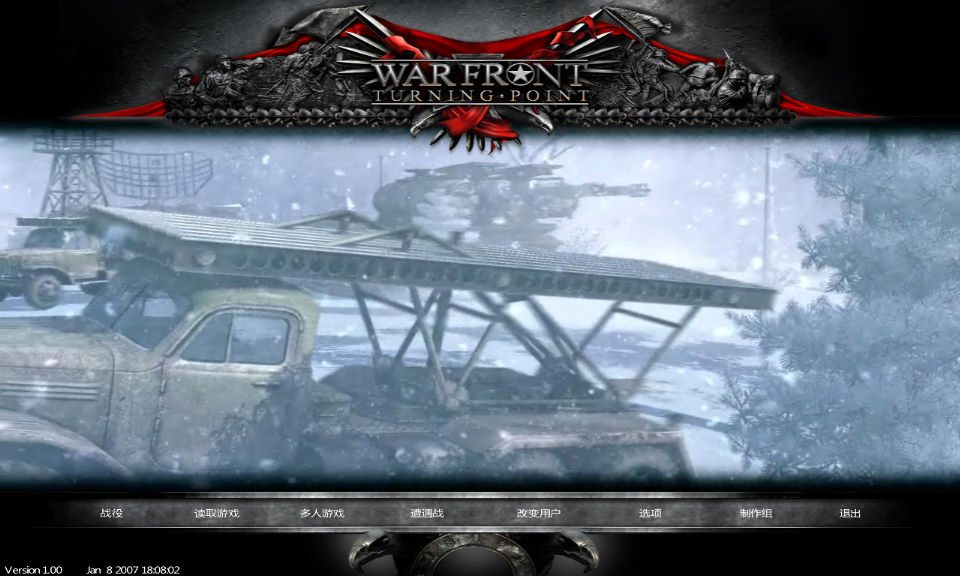
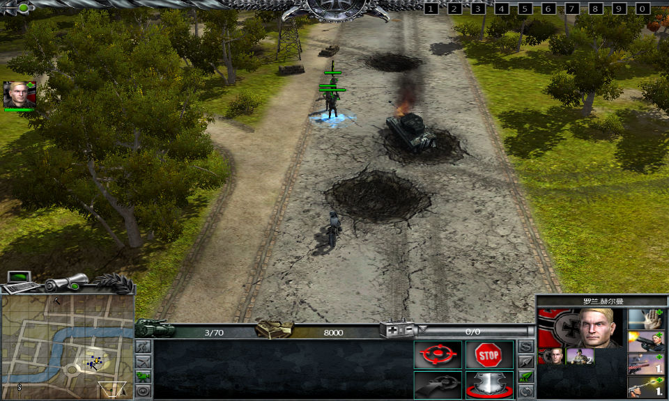

名稱：戰爭前線：轉折點／轉捩點／戰場轉折點／登陸日：戰爭前線轉折點 (War Front: Turning Point，簡中／英文版)
簡介：Digital Reality 2007年出品的即時戰術遊戲，由10tacle代理發行，2008年由索奧爾
簡中化並代理發行 [待補]。


保護：英文版為光碟Tages+序號（ecaf-306a-ed89-30e0），簡中版為光碟，破解碼：
Warfront.exe
75 4F 6A 64
EB -- -- --
備註：VirtualBox無法正常執行，虛擬機請使用VMware。
備註：遊戲需要d3dx9_30.dll。
檔案：nocd_eng.rar = 英文免光碟檔